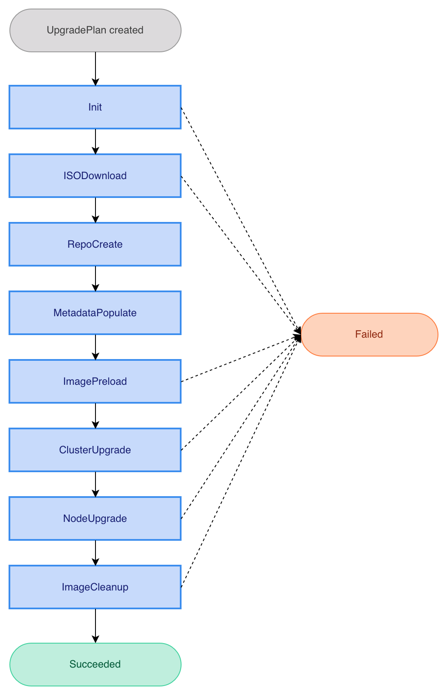

|
This is unreleased documentation for SUSE® Virtualization v1.8 (Dev). |
Upgrade Manager
|
harvester-upgrade-manager is an experimental add-on. Its add-on manifest, Helm chart, and container image are not included in the published SUSE VirtualizationISO image, but you can download them from the |
The Upgrade Manager provides a declarative, Kubernetes-native way to orchestrate SUSE Virtualization cluster upgrades. In contrast to the legacy upgrade mechanics, using this tool only requires you to create an UpgradePlan custom resource. The Upgrade Manager then handles the entire lifecycle: downloading the ISO, preloading container images, upgrading cluster components, sequencing node upgrades, and cleaning up afterward.
Limitations
Mutual exclusion with the built-in upgrade path
Do not use the Upgrade Manager simultaneously with the built-in upgrade mechanism. Running both concurrently can cause conflicting state changes, leaving the cluster inconsistent. Before creating an UpgradePlan, verify that no other upgrade process is active, and do not trigger an upgrade using the built-in mechanism while an UpgradePlan is in progress.
Air-gapped environments
The Upgrade Manager does not currently support air-gapped environments. For more information, see issue #10471.
As a workaround, preload the Upgrade Manager’s container image on each node (or host it in a private registry), and serve its Helm chart from an internal HTTP server.
Installing and enabling the add-on
-
Apply the add-on manifest from the
experimental-addonsrepository.kubectl apply -f \ https://raw.githubusercontent.com/harvester/experimental-addons/main/harvester-upgrade-manager/harvester-upgrade-manager.yaml -
Enable the add-on by patching its resource.
kubectl -n harvester-system patch addons.harvesterhci harvester-upgrade-manager \ --type=json -p '[{"op":"replace","path":"/spec/enabled","value":true}]' -
Verify that the Upgrade Manager deployment is running and ready.
$ kubectl -n harvester-system get deployments -l app.kubernetes.io/name=harvester-upgrade-manager NAME READY UP-TO-DATE AVAILABLE AGE harvester-upgrade-manager-controller-manager 1/1 1 1 36m
Starting an upgrade
The Upgrade Manager supports two ways to specify the target release. Both approaches result in an UpgradePlan resource that the Upgrade Manager reconciles through its upgrade pipeline.
Version-based entrypoint
The Upgrade Manager automatically resolves the ISO URL from the Version resource.
-
Create a
Versionresource containing the ISO download URL and an optional checksum.apiVersion: harvesterhci.io/v1beta1 kind: Version metadata: name: v1.8.0 namespace: harvester-system spec: isoURL: https://releases.rancher.com/harvester/v1.8.0/harvester-v1.8.0-amd64.iso -
Create an
UpgradePlanthat references the version by name.apiVersion: management.harvesterhci.io/v1beta1 kind: UpgradePlan metadata: generateName: hvst-upgrade- spec: version: v1.8.0
VirtualMachineImage-based entrypoint
This approach is useful when the ISO has already been uploaded or when you want more control over the image storage policy.
-
Import the ISO as a
VirtualMachineImage.The annotation
harvesterhci.io/os-upgrade-image: "True"marks the image as eligible for the upgrade.apiVersion: harvesterhci.io/v1beta1 kind: VirtualMachineImage metadata: annotations: harvesterhci.io/os-upgrade-image: "True" name: harvester-v1-8-0-amd64 namespace: harvester-system spec: backend: cdi displayName: harvester-v1.8.0-amd64.iso sourceType: download url: https://releases.rancher.com/harvester/v1.8.0/harvester-v1.8.0-amd64.iso retry: 3 targetStorageClassName: longhorn-static -
Create an
UpgradePlanthat references theVirtualMachineImage.apiVersion: management.harvesterhci.io/v1beta1 kind: UpgradePlan metadata: generateName: hvst-upgrade- spec: image: harvester-v1-8-0-amd64
Upgrade plan phases
The Upgrade Manager drives each UpgradePlan through a fixed pipeline, concluding at one of two terminal phases: Succeeded or Failed.
Each phase records two values in status.currentPhase: a present-progressive value (for example, Initializing) when work begins, and a past-tense value (Initialized) when work completes. Both are appended to status.phaseTransitionTimestamps for a complete history.

| Phase | Description |
|---|---|
|
Validate the request and prepare the internal state. |
|
Provision the ISO image as a |
|
Build an in-cluster upgrade repository backed by the ISO image. |
|
Read release metadata (SUSE Virtualization, Rancher, Kubernetes, and monitoring chart versions) from the upgrade repository. |
|
Preload container images required by the new release onto every node. |
|
Upgrade cluster-scoped components (for example, Rancher and the SUSE Virtualization chart). |
|
Evacuate virtual machines, upgrade Kubernetes and the operating system, and reboot each node sequentially. |
|
Clean up unnecessary preloaded container images from every node. |
Monitoring the upgrade progress
You can monitor the overall progress by inspecting the UpgradePlan resource.
kubectl get upgradeplans -o yamlThe output shows the full resource status, including the current phase, phase transition timestamps, node upgrade statuses, and release metadata.
$ kubectl get upgradeplans -o yaml
apiVersion: v1
items:
- apiVersion: management.harvesterhci.io/v1beta1
kind: UpgradePlan
metadata:
annotations:
management.harvesterhci.io/replica-replenishment-wait-interval: "600"
creationTimestamp: "2026-04-15T05:07:13Z"
generateName: hvst-upgrade-
generation: 1
name: hvst-upgrade-9s9cd
resourceVersion: "898907"
uid: 47b0458d-e2ed-43ff-9453-262eec0a8823
spec:
image: harvester-v1-8-0-rc5-amd64
status:
conditions:
- lastTransitionTime: "2026-04-15T05:47:54Z"
message: UpgradePlan has completed
observedGeneration: 1
reason: Succeeded
status: "False"
type: Progressing
- lastTransitionTime: "2026-04-15T05:47:54Z"
message: ""
observedGeneration: 1
reason: ReconcileSuccess
status: "False"
type: Degraded
- lastTransitionTime: "2026-04-15T05:47:54Z"
message: Entered one of the terminal phases
observedGeneration: 1
reason: Executed
status: "False"
type: Available
currentPhase: Succeeded
isoImageID: harvester-v1-8-0-rc5-amd64
nodeUpgradeStatuses:
alfa-1-tink-system:
state: ImageCleaned
phaseTransitionTimestamps:
- phase: Initializing
phaseTransitionTimestamp: "2026-04-15T05:07:13Z"
- phase: Initialized
phaseTransitionTimestamp: "2026-04-15T05:07:13Z"
- phase: ISODownloading
phaseTransitionTimestamp: "2026-04-15T05:07:13Z"
- phase: ISODownloaded
phaseTransitionTimestamp: "2026-04-15T05:11:13Z"
- phase: RepoCreating
phaseTransitionTimestamp: "2026-04-15T05:11:13Z"
- phase: RepoCreated
phaseTransitionTimestamp: "2026-04-15T05:11:16Z"
- phase: MetadataPopulating
phaseTransitionTimestamp: "2026-04-15T05:11:16Z"
- phase: MetadataPopulated
phaseTransitionTimestamp: "2026-04-15T05:11:27Z"
- phase: ImagePreloading
phaseTransitionTimestamp: "2026-04-15T05:11:27Z"
- phase: ImagePreloaded
phaseTransitionTimestamp: "2026-04-15T05:20:11Z"
- phase: ClusterUpgrading
phaseTransitionTimestamp: "2026-04-15T05:20:12Z"
- phase: ClusterUpgraded
phaseTransitionTimestamp: "2026-04-15T05:32:19Z"
- phase: NodeUpgrading
phaseTransitionTimestamp: "2026-04-15T05:32:19Z"
- phase: NodeUpgraded
phaseTransitionTimestamp: "2026-04-15T05:45:57Z"
- phase: CleaningUp
phaseTransitionTimestamp: "2026-04-15T05:45:57Z"
- phase: CleanedUp
phaseTransitionTimestamp: "2026-04-15T05:47:53Z"
- phase: Succeeded
phaseTransitionTimestamp: "2026-04-15T05:47:54Z"
previousVersion: v1.7.1
releaseMetadata:
harvester: v1.8.0-rc5
harvesterChart: 1.8.0-rc5
kubernetes: v1.35.2+rke2r1
minUpgradableVersion: v1.7.0
monitoringChart: 108.0.2+up77.9.1-rancher.11
os: Harvester v1.8.0-rc5
rancher: v2.14.0
singleNode: alfa-1-tink-system
kind: List
metadata:
resourceVersion: ""For a more detailed view that includes Kubernetes events emitted during phase transitions, run the following command:
kubectl describe upgradeplansThe output’s Events section is particularly useful for diagnosing transient errors that the Upgrade Manager automatically recovers from.
$ kubectl describe upgradeplans
Name: hvst-upgrade-9s9cd
Namespace:
Labels: <none>
Annotations: management.harvesterhci.io/replica-replenishment-wait-interval: 600
API Version: management.harvesterhci.io/v1beta1
Kind: UpgradePlan
Metadata:
Creation Timestamp: 2026-04-15T05:07:13Z
Generate Name: hvst-upgrade-
Generation: 1
Resource Version: 898907
UID: 47b0458d-e2ed-43ff-9453-262eec0a8823
Spec:
Image: harvester-v1-8-0-rc5-amd64
Status:
Conditions:
Last Transition Time: 2026-04-15T05:47:54Z
Message: UpgradePlan has completed
Observed Generation: 1
Reason: Succeeded
Status: False
Type: Progressing
Last Transition Time: 2026-04-15T05:47:54Z
Message:
Observed Generation: 1
Reason: ReconcileSuccess
Status: False
Type: Degraded
Last Transition Time: 2026-04-15T05:47:54Z
Message: Entered one of the terminal phases
Observed Generation: 1
Reason: Executed
Status: False
Type: Available
Current Phase: Succeeded
Iso Image Id: harvester-v1-8-0-rc5-amd64
Node Upgrade Statuses:
alfa-1-tink-system:
State: ImageCleaned
Phase Transition Timestamps:
Phase: Initializing
Phase Transition Timestamp: 2026-04-15T05:07:13Z
Phase: Initialized
Phase Transition Timestamp: 2026-04-15T05:07:13Z
Phase: ISODownloading
Phase Transition Timestamp: 2026-04-15T05:07:13Z
Phase: ISODownloaded
Phase Transition Timestamp: 2026-04-15T05:11:13Z
Phase: RepoCreating
Phase Transition Timestamp: 2026-04-15T05:11:13Z
Phase: RepoCreated
Phase Transition Timestamp: 2026-04-15T05:11:16Z
Phase: MetadataPopulating
Phase Transition Timestamp: 2026-04-15T05:11:16Z
Phase: MetadataPopulated
Phase Transition Timestamp: 2026-04-15T05:11:27Z
Phase: ImagePreloading
Phase Transition Timestamp: 2026-04-15T05:11:27Z
Phase: ImagePreloaded
Phase Transition Timestamp: 2026-04-15T05:20:11Z
Phase: ClusterUpgrading
Phase Transition Timestamp: 2026-04-15T05:20:12Z
Phase: ClusterUpgraded
Phase Transition Timestamp: 2026-04-15T05:32:19Z
Phase: NodeUpgrading
Phase Transition Timestamp: 2026-04-15T05:32:19Z
Phase: NodeUpgraded
Phase Transition Timestamp: 2026-04-15T05:45:57Z
Phase: CleaningUp
Phase Transition Timestamp: 2026-04-15T05:45:57Z
Phase: CleanedUp
Phase Transition Timestamp: 2026-04-15T05:47:53Z
Phase: Succeeded
Phase Transition Timestamp: 2026-04-15T05:47:54Z
Previous Version: v1.7.1
Release Metadata:
Harvester: v1.8.0-rc5
Harvester Chart: 1.8.0-rc5
Kubernetes: v1.35.2+rke2r1
Min Upgradable Version: v1.7.0
Monitoring Chart: 108.0.2+up77.9.1-rancher.11
Os: Harvester v1.8.0-rc5
Rancher: v2.14.0
Single Node: alfa-1-tink-system
Events:
Type Reason Age From Message
---- ------ ---- ---- -------
Normal PhaseTransition 67m upgradeplan-controller Entering phase ISODownload
Normal PhaseCompleted 63m upgradeplan-controller Completed phase ISODownload
Normal PhaseTransition 63m upgradeplan-controller Entering phase RepoCreate
Warning ReconcileError 63m upgradeplan-controller Pipeline error: Deployment.apps "hvst-upgrade-9s9cd-repo" not found
Normal PhaseCompleted 63m upgradeplan-controller Completed phase RepoCreate
Normal PhaseTransition 63m upgradeplan-controller Entering phase MetadataPopulate
Normal PhaseCompleted 63m upgradeplan-controller Completed phase MetadataPopulate
Normal PhaseTransition 63m upgradeplan-controller Entering phase ImagePreload
Warning ReconcileError 63m upgradeplan-controller Pipeline error: Plan.upgrade.cattle.io "hvst-upgrade-9s9cd-image-preload" not found
Normal PhaseCompleted 54m upgradeplan-controller Completed phase ImagePreload
Normal PhaseTransition 54m upgradeplan-controller Entering phase ClusterUpgrade
Normal PhaseCompleted 42m (x2 over 42m) upgradeplan-controller Completed phase ClusterUpgrade
Normal PhaseTransition 42m (x2 over 42m) upgradeplan-controller Entering phase NodeUpgrade
Normal RestoreVMConfigMapCreated 41m vm-live-migrate-detector ConfigMap harvester-system/hvst-upgrade-9s9cd-restore-vm created
Normal VMShutdownCompleted 41m vm-live-migrate-detector Shutdown completed for 0 VM(s) on node alfa-1-tink-system, success: 0, failed: 0
Normal PhaseCompleted 28m upgradeplan-controller Completed phase NodeUpgrade
Normal PhaseTransition 28m upgradeplan-controller Entering phase ImageCleanup
Warning ReconcileError 28m upgradeplan-controller Pipeline error: fetch image list from http://hvst-upgrade-9s9cd-repo.harvester-system/harvester-iso/bundle/harvester/images-lists-archive/v1.7.1/image_list_all.txt: Get "http://hvst-upgrade-9s9cd-repo.harvester-system/harvester-iso/bundle/harvester/images-lists-archive/v1.7.1/image_list_all.txt": dial tcp: lookup hvst-upgrade-9s9cd-repo.harvester-system on 10.53.0.10:53: read udp 10.52.0.25:37478->10.53.0.10:53: read: connection refused
Warning ReconcileError 28m upgradeplan-controller Pipeline error: fetch image list from http://hvst-upgrade-9s9cd-repo.harvester-system/harvester-iso/bundle/harvester/images-lists-archive/v1.7.1/image_list_all.txt: Get "http://hvst-upgrade-9s9cd-repo.harvester-system/harvester-iso/bundle/harvester/images-lists-archive/v1.7.1/image_list_all.txt": dial tcp 10.53.31.29:80: connect: connection refused
Normal PhaseCompleted 26m (x2 over 26m) upgradeplan-controller Completed phase ImageCleanup
Normal UpgradeSucceeded 26m (x2 over 26m) upgradeplan-controller Upgrade completed successfullyAborting an upgrade
A validating webhook guards in-flight UpgradePlan resources against accidental deletion. To abort an upgrade that is still progressing, perform the following steps:
-
Acknowledge the cancellation with the
management.harvesterhci.io/allow-deletionannotation.kubectl annotate upgradeplans <upgradeplan-name> management.harvesterhci.io/allow-deletion=true -
Delete the resource.
kubectl delete upgradeplans <upgradeplan-name>Resource deletion is unconditionally blocked during the
ClusterUpgradeandNodeUpgradephases, regardless of annotations. Interrupting these phases can leave the cluster components or a partially-upgraded node in an inconsistent state. Wait for the current phase to complete before aborting.
UpgradePlan resources in a terminal phase (Succeeded or Failed) can be deleted directly without an annotation.
Recovering from an accidentally deleted UpgradePlan
If an UpgradePlan is deleted during any phase other than ClusterUpgrading or NodeUpgrading, the Upgrade Manager’s finalizer cleans up associated resources: the upgrade repository deployment and service, VirtualMachineImage resources, image preload plans, cluster upgrade jobs, and node annotations. Currently running upgrade jobs continue as orphaned processes with no further coordination.
A partially completed upgrade cannot be resumed after the UpgradePlan is deleted. The cluster may be left with components at mixed versions, requiring manual investigation to assess its state before taking further action.
Disabling the add-on
You can safely uninstall the Upgrade Manager by disabling the add-on.
kubectl -n harvester-system patch addons.harvesterhci harvester-upgrade-manager \
--type=json -p '[{"op":"replace","path":"/spec/enabled","value":false}]'|
Do not disable the harvester-upgrade-manager add-on while an upgrade is in progress. Disabling it uninstalls the Upgrade Manager, halting all reconciliation and leaving the |